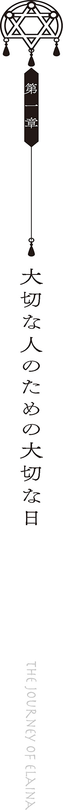

壁に掛けてあるカレンダーの数日後の日付に、色褪せたインクで丸印がつけられていました。
飄々と生きているだけの私にとって、楽観的になんとなく毎日を過ごしているだけの私にとって、その日だけはどうしても外せない用事がありました。
ずっと前から、楽しみにしていました。
この日は私にとってとても大きな意味を持つ一日なのです。特別な一日なのです。
何年も前から、ずっと前から、この日を待ちわびて、焦がれて生きてきました。
この日、私は彼女と再び会うことができるのです。
私と再び会ったとき、彼女は一体どんな顔をすることでしょう。驚くでしょうか。笑ってくれるでしょうか。もしかしたら泣き出してしまうかもしれません。
私が彼女から教わったことは、本当に、本当に、たくさんありました。数え切れないくらいに。
彼女と過ごした日々は、この日に始まり、そしてこの日のために、紡がれてきたのです。
私に世界の広さを教えてくれた彼女との、とてもとても大切な、思い出の一日がそこにはあるのです。
「楽しみですね」
柄にもなく心躍らせながら、私は荷物をまとめました。
『二十二年に一度の大接近！ ほうき星が空に現れる日』
このたび訪れる地方のパンフレットを胸に納めながら、私は扉に手をかけました。ギイ、とたてつけの悪い扉が、己が限界を知らせるように悲鳴をあげます。
私はそして、扉を閉めるのです。
「いってきます」
あなたと再び会う為に。
あなたと再び会う旅に。